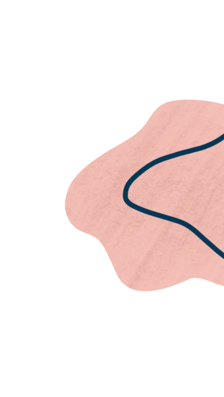
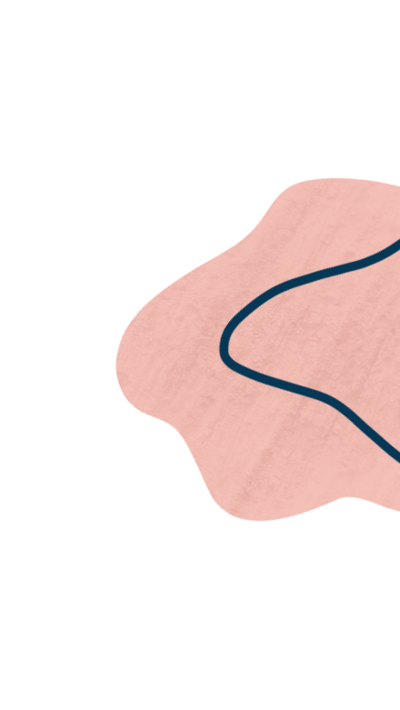

Ternyata ini loh tipe kepribadian kamu
ISTJ
- Introvert
- Sensing
- Thinking
- Judging
 


The Duty Fulfiller
Orang dengan jenis kepribadian ISTJ cenderung pendiam dan pemalu yang tertarik pada keamanan dan hidup yang tenteram; sangat setia, berdedikasi tinggi, dan dapat diandalkan; cenderung percaya pada hukum dan tradisi dan mengharapkan hal yang sama dari orang lain.
Keunggulan Kamu
Keunggulan utama ISTJ adalah cenderung menghormati janji-janji mereka dan akan berusaha keras untuk memenuhi kewajiban dan tanggung jawab mereka; alami untuk mencari keteraturan dan kejelasan dalam hidup mereka; bersikap praktis dan realistis dalam pendekatan mereka terhadap kehidupan; memiliki disiplin yang kuat dalam pendekatan mereka terhadap pekerjaan dan hidup.
Kekurangan Kamu
Salah satu kekurangan ISTJ terlalu kaku dalam pemikiran mereka dan enggan untuk mempertimbangkan alternatif atau perubahan yang melibatkan pengambilan risiko; kesulitan menyesuaikan diri dengan perubahan mendadak atau situasi yang tidak terduga; cenderung melihat kesalahan daripada melihat prestasi dan bisa terlalu kritis dalam memberikan umpan balik, terutama jika itu tidak diminta.
Yang Mirip Kamu
Jeff Bezos - Businessman
Irene (RED Velvet) - Singer
Tzuyu (TWICE) - Singer
Saran Buat Kamu
Menguraikan tugas-tugas menjadi langkah-langkah yang dapat diukur akan membantu Anda merasa lebih teratur dan terarah; Coba identifikasi cara di mana Anda dapat mengatur lingkungan dan rutinitas harian Anda agar sesuai dengan preferensi Anda; Pertimbangkan untuk menyusun pro dan kontra secara sistematis, mencari informasi yang relevan, dan mempertimbangkan implikasi jangka panjang sebelum membuat keputusan penting.